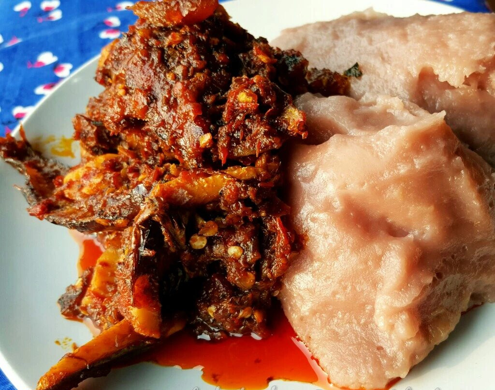

Ebiripo

Description
Ebiripo is a staple of the magnificent and sociable Ijebu people of Western Nigeria. It is a dish made out of grated cocoyam, which is wrapped in local banana leaves, popularly called Moi Moi leaves and steamed.
The beauty of Ebiripo is in its simplicity.
Ingredients
- Cocoyam
- Grounded pepper (optional)
- Water
- Leaves (for wrapping)
- Salt
Steps
- Peel and cut the cocoyam.
- Grate or blend the cocoyam into a paste till a smooth consistency is achieved.
- Add salt to the paste and mix together. If the paste is a little thick, add some water.
- Place a pot of water on medium heat, place a steaming pot on it(if there is) or add the stalk of the
leave inside the pot.
- Scoop the paste and add into the leaves and wrap.
- Place the wrapped leave into a pot and steam until it is cooked.
- Serve with any soup or stew of your choice.